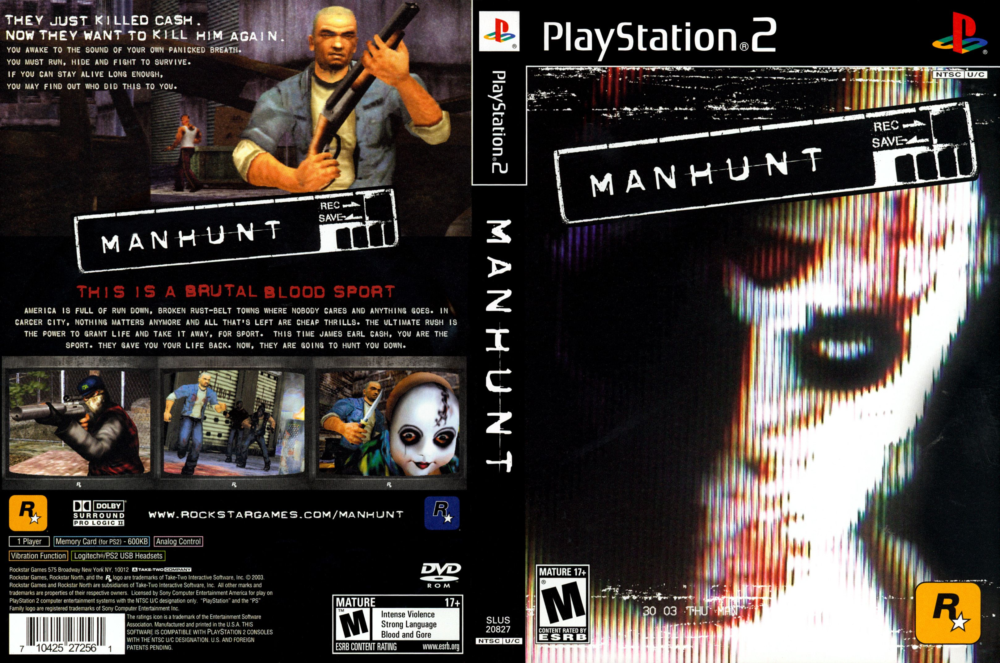

Por mais que a franquia Grand Theft Auto seja polêmica devido a sua violência, ainda assim passa de longe das polêmicas que o jogo Manhunt trouxe para a desenvolvedora Rockstar Games. Manhunt foi um jogo lançado no dia 18 de Novembro de 2003 e para as platarformas Xbox,Playstation 2 e PC, o jogo está disponivel também para o Playstation 4. A classificação indicativa deste game é para maiores de 18 anos.
 O game se passa na cidade fictícia de Carcer City e conta história de James Earl Cash, um presidiário que é sequestrado e ele terá que participar de um snuff-movies (assasinatos reais) onde a sua recompensa é a sua liberdade.
{kind=link}
É notável que o jogo é de extrema violência (observando pela capa do jogo acima),no game o jogador pode decapitar os inimigos que pertecem a pequenas gangues que foram formadas na cidade, além disso, o jogo é stealth (furtividade) misturado com ação como que o comparo com a franquia Metal Gear Solid, só que Manhunt tem mais gore do que Metal Gear Solid,outro fato curioso é se caso o jogador mata os inimigos de forma bastante violenta, como esmagar a cabeça, o game te dá 5 estralas por isso (no modo hardcore,pois no modo fetiche que é o normal, tem somente 3 estrelas),Por outro lado, existe um assasinato real que envolve este jogo, onde um adoslecente de 17 anos que era fã do game matou o seu próprio amigo de 14 anos, o homicidio aconteceu no ano de 2004 (um ano após o lançamento de Manhunt), a Família prestou queixa contra a Rockstar Games e Sony, dessa forma, o game foi banido e retirado, em suma, as investigações revelaram que o contexto do crime era o roubo de drogas e uma cópia do jogo foi encontrado quarto da vítima, o assassino foi condenado a prisão perpértua e as acusações contra a Sony e a Rockstar Games foram retiradas.